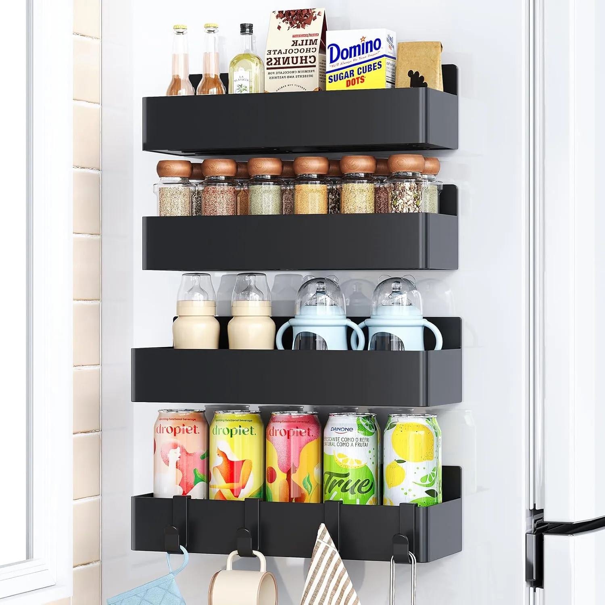
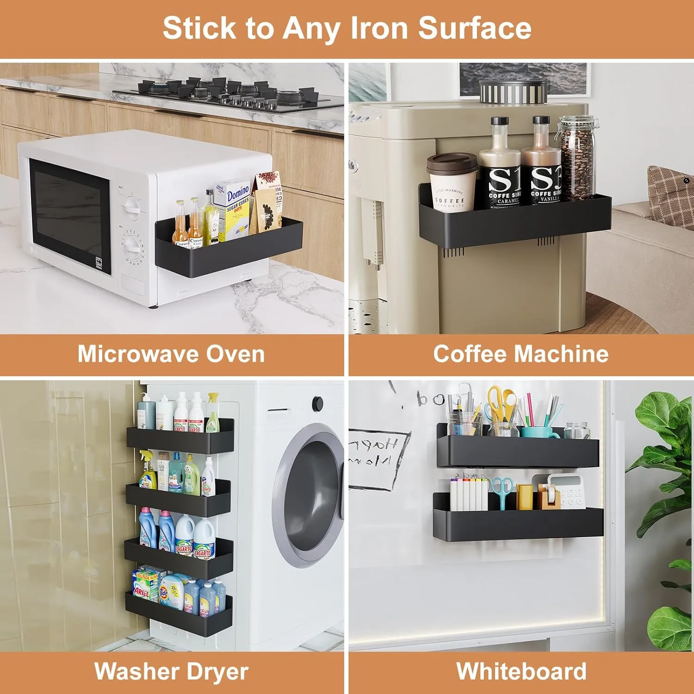
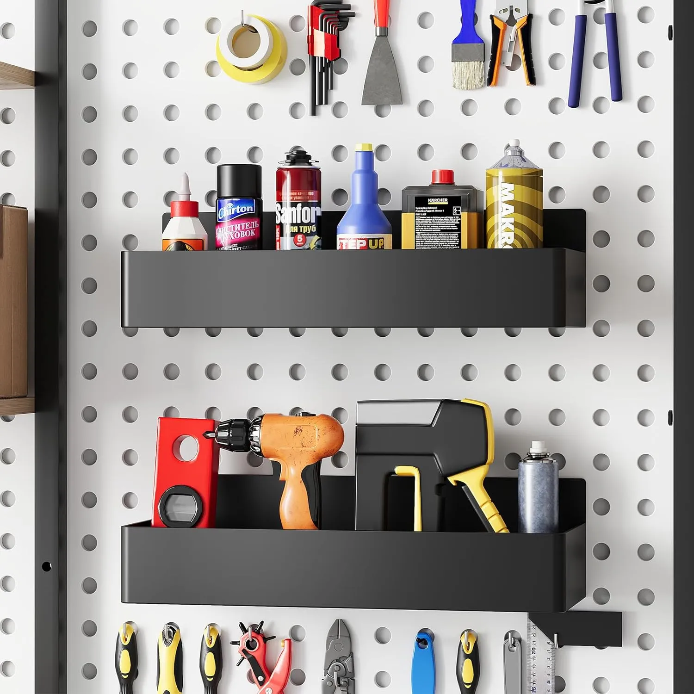
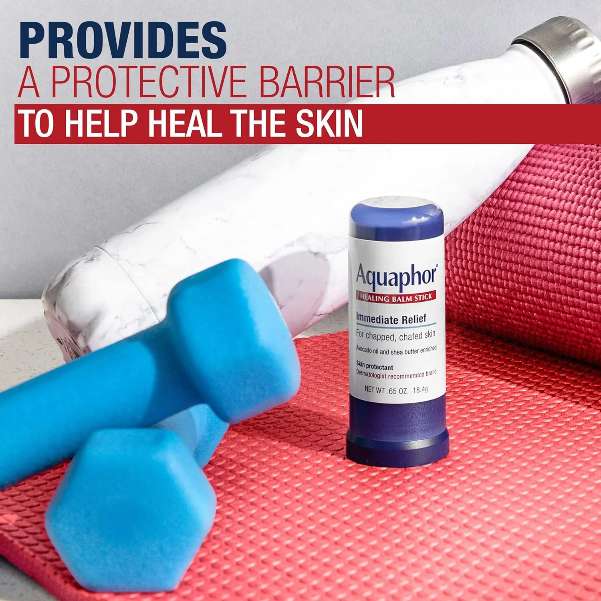

The problem: the kitchen counter becomes the junk drawer
Spices, oils, coffee pods, bottles, snack boxes, and cleaning sprays all start small. Then suddenly the counter looks busy even when the kitchen is clean.
The Mystozer rack is useful because it does not ask for more counter space. It uses the side of a refrigerator or another suitable iron surface and turns that blank area into vertical storage.


Before and after: what changes in real life?
Your spices are scattered, bottles hide behind other bottles, and every quick meal starts with moving things around.
Daily items sit in a visible, grab-and-go zone on the fridge side, leaving the counter cleaner and easier to use.
Why it converts: it solves a space problem without a project
People do not always want a new shelf, a cabinet install, or another organizer that takes up space. This product is appealing because the setup is simple and the benefit is visible immediately.
No drilling or wall damage
It is made for suitable magnetic or iron surfaces, so renters and small-kitchen owners can avoid permanent installation.
Turns dead space into storage
The side of the fridge often does nothing. This makes it useful for daily items that need to stay close.
Works beyond spices
Use it for bottles, coffee station items, snacks, cleaning supplies, wraps, or small pantry overflow.
Cleaner visual routine
When the items have a home, the counter looks less crowded without needing a full kitchen reset.


Objections worth answering before you buy
Check your surface first. This only makes sense if the place you want to use it is magnetic or otherwise compatible with the product instructions.
It is also open storage, not hidden storage. If you want everything behind a cabinet door, this is not that. Its strength is quick access and freeing up visible counter space.
How to use it so it actually stays organized
- Test the fridge side or target surface before loading the rack.
- Put the highest-use items on the easiest shelf: spices, oils, coffee items, or daily bottles.
- Keep heavy items balanced and follow the product's load guidance instead of overpacking one side.
- Wipe the shelf during normal kitchen cleanup so it does not become another dusty storage spot.

Who should consider it, and who should skip it?
Small kitchens, renters, busy counters, spice clutter, coffee stations, fridge-side storage, and people who want a no-drill organizer.
Non-magnetic surfaces, people who want hidden storage, or anyone who needs a permanent wall-mounted shelf.
Bottom line: buy it if your fridge side is wasted space
The Mystozer Magnetic Spice Rack works because the problem is obvious: too many small kitchen items and not enough easy storage.
If your counter keeps getting crowded again after every cleanup, check the current price and reviews before adding another organizer that sits on the counter.
Quick questions
Is this good for a small kitchen?
Yes. It is strongest when counter and cabinet space are limited and the side of the fridge is available.
Can it hold more than spices?
Yes, as long as the items fit and the shelf is loaded according to the product instructions. It can be useful for bottles, coffee items, snacks, and cleaning supplies.
Does it need screws?
No. It is designed for suitable magnetic or iron surfaces, so no drilling is needed.